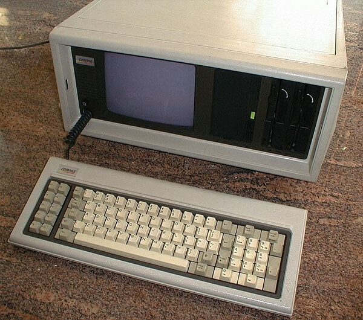
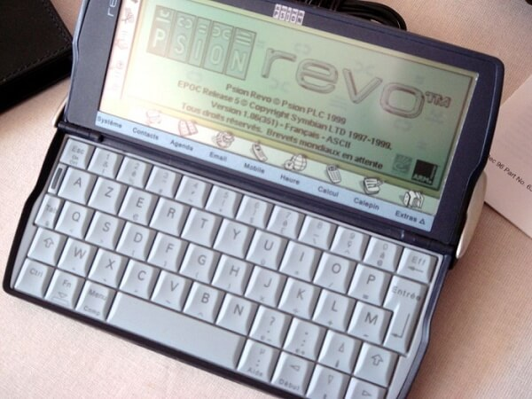
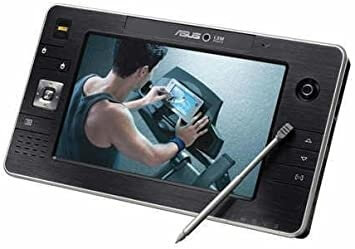
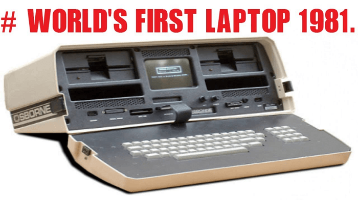
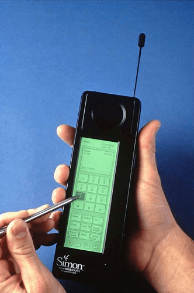
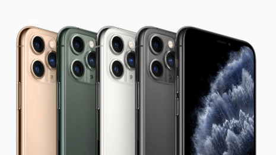

History and Evolution of Mobile Computing
The main idea of Mobile computing was evolving since the 1990s. It has evolved from two-way radios to modern day communication devices.
Devices used in Mobile Computing
Following is the list of most common forms of devices used in mobile computing:
1. Portable Computers
A portable computer is a computer that is designed in a way that you can move it from one place to another. It includes a display and a keyboard. Generally, portable computers are microcomputers.
Compaq Portable and Contemporary portable computer with 3 LCD screens were the early examples of portable computers. Now, portable computers are discontinued.

2. Personal Digital Assistant/Enterprise Digital Assistant (PDA or EDA)
A Personal Digital Assistant (PDA) is also known as a palmtop computer. Sometimes, it is also called Enterprise Digital Assistant (EDA). A personal Digital Assistant (PDA) is a mobile device used to function as a personal information manager or a personal data assistant. Its name, Personal Digital Assistant (PDA), was evolved from Personal Desktop Assistant, a software term for an application that prompts or prods the user of a computer with suggestions or provides a quick reference to contacts and other lists.
Apple Newton and UPOP PDA were the early examples of Personal Digital Assistant. Now, a Personal Digital Assistant (PDAs) are also discontinued.

3. Ultra-Mobile PC
An ultra-mobile PC was a small form factor version of a pen computer. It was a class of laptops whose specifications were launched by Microsoft and Intel in 2006.
Samsung q1 ultra-premium was the early example of an ultra-mobile PC. Now, ultra-mobile PCs are also discontinued.

4. Laptop
A laptop is a small, portable personal computer (PC) built in a foldable device. The folding structure of a laptop is called a clamshell form factor. The flip or clamshell is a form factor of a mobile phone or other devices that include two or more folded sections via a hinge. A laptop typically has a thin LCD or LED computer screen mounted on the inside of the clamshell's upper lid and an alphanumeric keyboard on the inside of the lower lid. Laptops are easy to carry for transportation, and that's why they are best suitable for mobile use.
Osborne 1 was the first laptop in the world. See the below picture.

You can now find the latest versions of laptops are so thin and efficient for any scientific work.
5. Smartphone
A smartphone is a mobile device that combines cellular and mobile computing functions into one unit. The smartphones are invented to provide more advanced computing capability and connectivity than basic feature phones.
Smartphones are different from basic feature phones by their more robust hardware capabilities and extensive mobile operating systems, which facilitate more comprehensive software, internet i.e., web browsing over mobile broadband, and multimedia functionality i.e., music, video, cameras, and gaming etc., along with the core phone functions such as voice calls and text messaging.
IBM Simon Personal Communicator thought to be the first smartphone in the world. Below is the image of IBM Simon Personal Communicator.

Early smartphones were invented and marketed as attempting to bridge the functionality of standalone personal digital assistant (PDA) devices with support for cellular telephony but were limited by their bulky form, short battery life, slow, analog cellular networks, and the immaturity of wireless data services. But now, smartphones have the latest features of computers, more than one camera, advanced OS, bigger RAM and ROM. Now, they are also built with some artificial intelligence features such as unlock using facial recognition or fingerprint scanners, waterproof with IP67 and IP68 ratings and many other endless features.
Examples of new generation smartphone:
